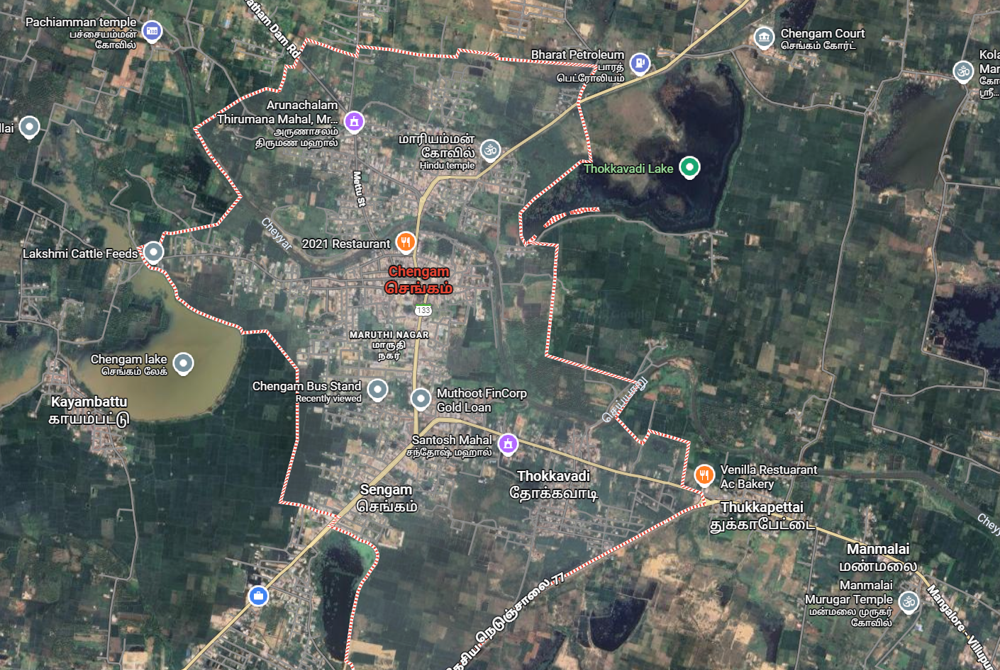
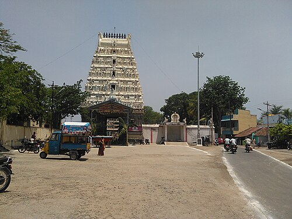

THIRUVANNAMALAI
CHENGAM


Chengam's history is marked by the Battle of Chengam in 1767, a key event in the First Anglo-Mysore War where British forces defeated the combined armies of Hyder Ali and the Nizam of Hyderabad. Historically, the town is also significant for the 16th/17th-century Venugopala Parthasarathi Temple, which features ornate paintings depicting the Ramayana.